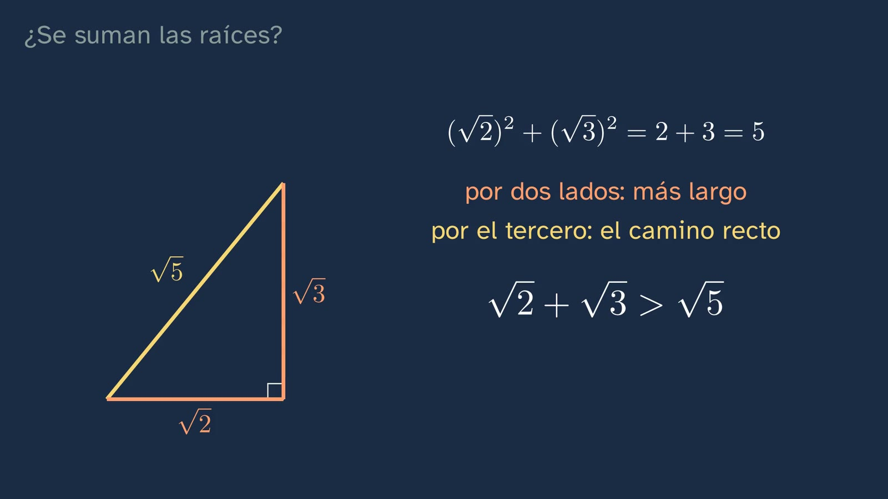
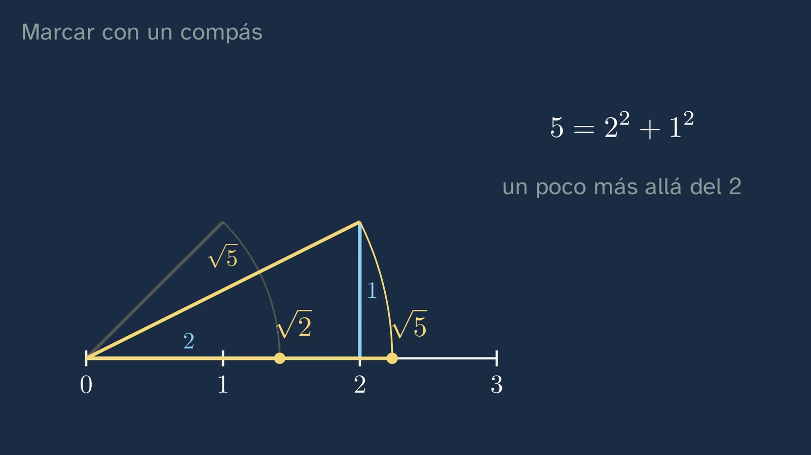
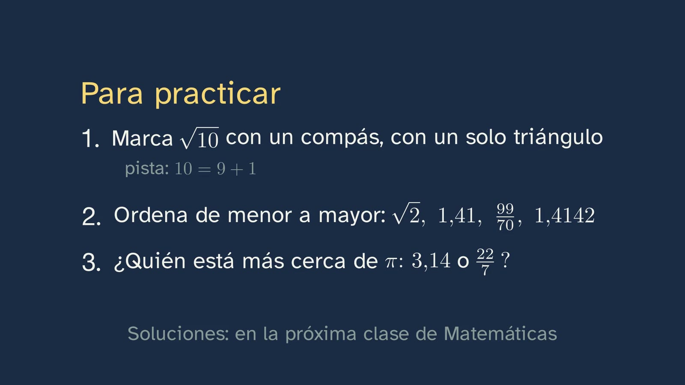
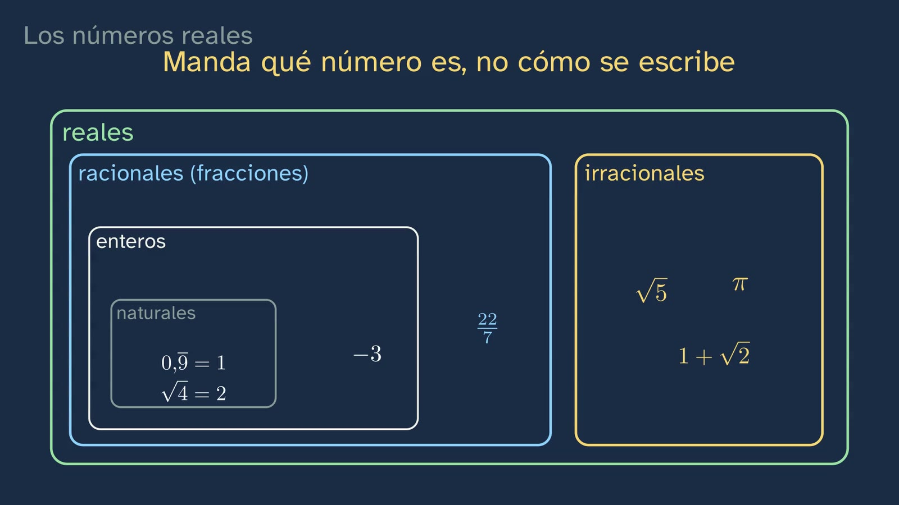

La recta sin huecos
En pocas palabras
La clase 2 demostró que las fracciones dejan huecos en la recta. Esta contesta lo que queda: ¿cómo se marcan los números de esos huecos, y queda al final algún punto sin número? Empieza recuperando qué es un irracional y corrigiendo los tres ejercicios de la clase anterior. Después llega el compás. La diagonal del cuadrado de lado 1, tumbada sobre la recta, marca √2, y no porque se mida, sino por dos razones: el teorema de Pitágoras dice cuánto mide la diagonal, y el compás guarda su abertura. El trazo del lápiz tiene grosor y la regla no da más que 1,41; lo exacto está en el razonamiento. El alumnado construye √5 con un triángulo de catetos 2 y 1. La espiral de Teodoro saca una raíz detrás de otra, porque cada triángulo suma uno bajo la raíz, y tras una apuesta se ve que caben dieciséis triángulos antes de dar la vuelta: con la hipotenusa √17, a la espiral le faltan unos nueve grados para cerrarla. Ahí entra el Teeteto de Platón, donde el joven Teeteto cuenta que Teodoro les demostraba, una a una, que esas raíces no se miden con la unidad, y que en la de diecisiete se detuvo. Que lo hiciera dibujando esta espiral es una hipótesis del siglo XX, discutida, y la clase lo dice así. Con las raíces ya construidas se desmonta un error: √2 + √3 no es √5, porque en el triángulo de catetos √2 y √3 la hipotenusa es √5, y el camino recto es el más corto. Pi se resiste al compás (está demostrado que no se puede construir), pero una rueda de diámetro 1, que rueda una vuelta sin resbalar, lo deja marcado en la recta. La clase se para a leer la fórmula de la circunferencia: si el diámetro se duplica, la vuelta se duplica, y la vuelta dividida entre el diámetro da siempre π, porque todas las circunferencias tienen la misma forma (una grande es una pequeña ampliada). Eso es π: la relación entre la longitud de la circunferencia y su diámetro, la misma en todas. Lambert demostró que π no es una fracción, y ni treinta y un billones de cifras lo habrían demostrado. El segundo error, «π vale 3,14» o «π vale 22/7», cae porque los dos son fracciones; 22/7 repite los decimales de 1/7, los del reloj de los restos de la clase 1, y Arquímedes no dijo que fuera π. Al final, la pregunta del título: cada punto de la recta tiene su lista de cifras, zoom a zoom, y cada lista de cifras encierra un solo punto en tramos encajados. Que la recta no tenga huecos, que dentro de todos esos tramos haya siempre un punto, no se puede demostrar: Dedekind escribió en 1872 que suponerlo no es más que un axioma. Fracciones e irracionales juntos, los números reales, llenan la recta. Una reflexión sobre los axiomas y el espacio de la física, el mapa de conjuntos con siete números con trampa y tres ejercicios cierran la clase. Ximena se despide con la frase que hay que recordar: cada punto de la recta, un número real.
Objetivo. Al terminar, el alumnado sabrá situar en la recta números irracionales como √2, √5 o π, construir algunos con regla y compás, y explicar qué son los números reales y cómo se clasifican.
Lo que esta ficha añade. La clase va al grano, y lo que no responde a su pregunta está aquí, para el profesorado que lo quiera: cómo se levanta la perpendicular que la voz da por hecha; qué números se construyen con regla y compás y por qué π no (Wantzel, Lindemann); las dos proposiciones de Arquímedes sobre el círculo; el Teeteto leído despacio, con lo que discuten los especialistas; las cortaduras de Dedekind, por qué los tramos encajados de la clase dicen lo mismo y una geometría de Hilbert en la que π es un hueco; y los detalles que un alumno atento preguntará: los puntos con dos listas de cifras, si el cero es natural y la casualidad de 1,41 + 1,73 = 3,14. La actividad de aula, propia, es la espiral construida con regla y compás o con GeoGebra.
Las palabras. En toda la clase, «fracción» quiere decir número racional: 2/4 y 1/2 son la misma. En la clase 2, «irracional» era «un número que no es una fracción»; desde esta, con los reales ya nombrados, es un número real que no es racional.
Currículo
Real Decreto 243/2022, Matemáticas I, materia de la modalidad de Ciencias y Tecnología de 1.º de Bachillerato (texto consolidado del BOE, comprobado el 30/09/2026 para la ficha del tema; el anexo de Matemáticas no ha cambiado desde 2022). Los minutos son los del vídeo.
| Elemento | Qué dice el decreto | Dónde se trabaja |
|---|---|---|
| Saber básico A.1 (A. Sentido numérico, 1. Sentido de las operaciones) | «Estrategias para operar con números reales y vectores: cálculo mental o escrito en los casos sencillos y con herramientas tecnológicas en los casos más complicados.» | La calculadora para comparar √2 + √3 con √5 (7:49); el cálculo mental de 22/7 = 3 + 1/7 (11:16); y los ejercicios 2 y 3, que piden ordenar y restar. La clase no opera con radicales: eso es el tema 2 (véase «Lo que la clase deja fuera») |
| Saber básico C.3 (C. Sentido espacial, 3. Visualización, razonamiento y modelización geométrica) | «Conjeturas geométricas en el plano: validación por medio de la deducción y la demostración de teoremas.» | Aquí sí, geométrico de verdad. Que el compás marca √2 exacta se valida deduciendo, con Pitágoras y la abertura del compás, no midiendo (2:55). La conjetura «√2 + √3 = √5» se refuta con la desigualdad del triángulo (7:18). Y la apuesta de la espiral (5:02) se contrasta con lo que dibuja la pizarra; en la actividad, con un ángulo medido |
| Saber básico F.1 (F. Sentido socioafectivo, 1. Creencias, actitudes y emociones) | «Tratamiento del error, individual y colectivo como elemento movilizador de saberes previos adquiridos y generador de oportunidades de aprendizaje en el aula de matemáticas.» | Dos errores, cada uno con su pausa para que el alumnado los piense antes: «√2 + √3 = √5» (7:05) y «π vale 3,14, o 22/7» (10:33). Y las trampas del mapa de conjuntos (15:19), que obligan a mirar qué número es y no cómo se escribe |
| Saber básico F.3 (F. Sentido socioafectivo, 3. Inclusión, respeto y diversidad) | «Valoración de la contribución de las matemáticas y el papel de matemáticos y matemáticas a lo largo de la historia en el avance de la ciencia y la tecnología.» | Teodoro en el Teeteto (5:59), Arquímedes (11:35), Lambert (9:57), Emma Haruka Iwao (10:10) y Dedekind (13:29 y 14:40). Iwao es la única mujer: en esta historia no hay mucho más donde elegir, y la clase no lo fuerza |
| Competencia específica 2 | «Verificar la validez de las posibles soluciones de un problema empleando el razonamiento y la argumentación para contrastar su idoneidad.» | Las soluciones de la clase 2 (0:57), sobre todo la de √4, donde la demostración tiene que fallar y hay que decir en qué paso (1:30). √2 + √3 frente a √5, comprobado de dos maneras: con el triángulo y con la calculadora (7:18 y 7:49). Su descripción habla de «la selección entre diferentes modos de comprobación de soluciones» |
| Competencia específica 5 | «Establecer, investigar y utilizar conexiones entre las diferentes ideas matemáticas estableciendo vínculos entre conceptos, procedimientos, argumentos y modelos para dar significado y estructurar el aprendizaje matemático.» | La geometría (Pitágoras, el compás, la semejanza de las circunferencias) al servicio de los números. Y las clases anteriores dentro de esta: los decimales de 1/7 dentro de 22/7 (11:11), 0,999… = 1 y 1 + √2 en el mapa (15:45), y la recíproca de la clase 1 en las dos casillas del zoom (12:49). Su descripción pide «enlazar las nuevas ideas matemáticas con ideas previas» |
| Competencia específica 6 | «Descubrir los vínculos de las matemáticas con otras áreas de conocimiento y profundizar en sus conexiones, interrelacionando conceptos y procedimientos, para modelizar, resolver problemas y desarrollar la capacidad crítica, creativa e innovadora en situaciones diversas.» | Con la Física (14:25): el tiempo y el espacio se escriben con números reales, y si el espacio es continuo hasta lo más pequeño es una pregunta abierta; Dedekind ya escribió que no tiene por qué serlo. Con la Historia: el Teeteto leído como fuente, separando lo que dice, lo que se deduce y lo que es hipótesis (5:59–7:02) |
| Competencia específica 7 | «Representar conceptos, procedimientos e información matemáticos seleccionando diferentes tecnologías, para visualizar ideas y estructurar razonamientos matemáticos.» | Toda la clase: el compás, la espiral, la rueda y el zoom son cuatro maneras de poner un número en la recta. Su descripción: las representaciones «facilitan el razonamiento y la demostración» |
| Competencia específica 9 | «Utilizar destrezas personales y sociales, identificando y gestionando las propias emociones, respetando las de los demás y organizando activamente el trabajo en equipos heterogéneos, aprendiendo del error como parte del proceso de aprendizaje y afrontando situaciones de incertidumbre, para perseverar en la consecución de objetivos en el aprendizaje de las matemáticas.» | Las dos apuestas (5:02 y 8:27), sin castigo para quien falla, y el error planteado con respeto: «Si has dicho que sí, se entiende» (7:18) |
| Criterio 2.1 | «Comprobar la validez matemática de las posibles soluciones de un problema, utilizando el razonamiento y la argumentación.» | La solución de √4 (1:30), √2 + √3 (7:18–8:05) y el ejercicio 3, que no se resuelve mirando cifras: hay que restar |
| Criterio 5.1 | «Manifestar una visión matemática integrada, investigando y conectando las diferentes ideas matemáticas.» | El mapa de conjuntos (14:51–16:24), con números de las tres clases del tema |
| Criterio 6.2 | «Analizar la aportación de las matemáticas al progreso de la humanidad, reflexionando sobre su contribución en la propuesta de soluciones a situaciones complejas y a los retos científicos y tecnológicos que se plantean en la sociedad.» | Sólo una parte, y hay que decirlo: la reflexión de 14:09, sobre cómo la física usa la recta real y lo que aún no sabe del espacio. La clase no trata retos tecnológicos: el cálculo de Iwao sale para enseñar que mirar cifras no demuestra |
| Criterio 7.1 | «Representar ideas matemáticas, estructurando diferentes razonamientos matemáticos y seleccionando las tecnologías más adecuadas.» | Elegir la herramienta según el número: el compás marca √2, √5 y la espiral, pero no π; la rueda marca π (8:12). Es «seleccionar las tecnologías más adecuadas» en sentido literal |
| Criterio 7.2 | «Seleccionar y utilizar diversas formas de representación, valorando su utilidad para compartir información.» | Fracción, decimal y punto como tres formas del mismo número: 3,14 = 314/100 (10:49), 22/7 = 3,142857 142857… (11:00) y la lista de cifras de cada punto (12:44) |
| Criterio 9.1 | «Afrontar las situaciones de incertidumbre identificando y gestionando emociones y aceptando y aprendiendo del error como parte del proceso de aprendizaje de las matemáticas.» | Las apuestas y los dos errores |
Lo que añade la actividad de esta ficha. Con GeoGebra trabaja además el saber C.2, «Relaciones de objetos geométricos en el plano: representación y exploración con ayuda de herramientas digitales», y el criterio 3.2, «Emplear herramientas tecnológicas adecuadas en la formulación o investigación de conjeturas o problemas». Y el ángulo de cada triángulo de la espiral anticipa la trigonometría del curso: «Cálculo de longitudes y medidas angulares: uso de la trigonometría» (B.1).
Lo que hay que traer de la ESO (Real Decreto 217/2022, texto consolidado). De 1.º a 3.º: «Relaciones geométricas como la congruencia, la semejanza y la relación pitagórica en figuras planas y tridimensionales: identificación y aplicación» y «Construcción de figuras geométricas con herramientas manipulativas y digitales (programas de geometría dinámica, realidad aumentada…)» (C.1); y «Comparación y ordenación de fracciones, decimales y porcentajes: situación exacta o aproximada en la recta numérica» (A.4). En 4.º, la clasificación de los números, que la clase recupera (14:51): en Matemáticas B, «Los conjuntos numéricos (naturales, enteros, racionales y reales): relaciones entre ellos y propiedades» (A.3); en Matemáticas A, «Los conjuntos numéricos como forma de responder a diferentes necesidades: contar, medir, comparar, etc.» (A.2) y «Algunos números irracionales en situaciones de la vida cotidiana» (A.3). Por eso la voz dice «seguramente ya los clasificaste»: la lista con nombres sólo está en Matemáticas B. De las clases 1 y 2 del tema: los decimales de una fracción se acaban o se repiten, y al revés; 0,999… = 1; el reloj de los restos de 1/7; √2 no es una fracción; y 1 + √2 tampoco.
Cómo está construida la clase
Capítulos del vídeo
Casi dieciocho minutos (17:59), en once capítulos, con un hilo: recuperar y corregir; marcar con el compás y con la espiral; un error; π con la rueda; otro error; llenar la recta; nombrar los reales; practicar. Sigue las bases formativas del canal y lo que pide la competencia 7: representar para razonar. Tiene dos paradas para pensar lo que se hace (la fórmula de la circunferencia, 9:07, y los axiomas, 14:09), en pocas frases y con su silencio. Ximena sale a cámara cuatro veces, unos veintiún segundos en total: al saludar (0:00), con el gancho (2:16), a mitad (8:07) y al despedirse (17:52).
| Capítulo | Qué pasa | Por qué así |
|---|---|---|
| Qué vamos a ver (0:00) | Ximena saluda. El mapa de las seis clases del tema, con la tercera resaltada. «Hoy vamos a llenar la recta»: la clase 2 demostró que hay huecos; ahora, marcar sus números y ver si queda algún punto sin número. | El tema 1 conserva su mapa numerado. La pregunta nace de la respuesta de la clase anterior. |
| Lo que ya sabes (0:22) | ¿Qué es un irracional? ¿Cómo son sus decimales? Pausa (0:33). No es una fracción, y por eso sus decimales ni se acaban ni se repiten: si lo hicieran, sería una fracción (clase 1). | Recuperar antes de oír la respuesta. Las dos ideas vuelven en el zoom (12:49) y con π (9:57). |
| Las soluciones de la clase anterior (0:57) | √3, contando treses, con a y b enteros y la descomposición única. √4: falla el paso dos, porque 4b² = (2b)² es un cuadrado y no sobra ningún dos (1:30). 1 + √2: si fuera una fracción, restándole 1 también lo sería √2 (1:54). | Breves, y coherentes con la ficha de la clase 2, que da por buena la respuesta «el paso dos». |
| Marcar con un compás (2:16) | El gancho: «el compás marcará muchos números que no son fracciones… pero uno se le resiste: pi». La construcción de √2, despacio y avisando de que se repite (2:23). ¿Cómo lo sabemos? Pitágoras y el compás que guarda la distancia: «No hemos medido nada: lo hemos construido» (2:55). El dibujo de cerca: el trazo tiene grosor, la regla lee 1,41 (3:20); «Lo exacto no está en el dibujo: está en el razonamiento» (3:26). Para y piensa: ¿y √5? (3:32; pausa en 3:44). La solución, con catetos 2 y 1 (3:49). | Un ejemplo resuelto entero y uno que hace el alumno. Separar el dibujo del razonamiento prepara cada «exacto» que viene después (la espiral, la rueda). |
| La espiral de Teodoro (4:14) | Triángulo a triángulo, √2 y √3 (4:14), √4 = 2 y hasta √7 (4:41): «+1 dentro de la raíz». Apuesta: ¿cuántos triángulos caben antes de dar la vuelta? (5:02; pausa en 5:11). Se ve: dieciséis, hasta √17, y lo que falta para la vuelta, unos 9°, es una cuña naranja; el siguiente se montaría sobre el primero (5:16). El compás las pasa a la recta (5:39). El Teeteto: habla el joven Teeteto; la cita, en azul y con su lugar; lo que se deduce (el 9 y el 16), rotulado como deducción (5:59). ¿Por qué en el diecisiete? «Nadie lo sabe» (6:37); la espiral es una hipótesis del siglo XX, discutida (6:51). | Predecir antes de ver, y una animación que responde a la predicción. La historia separa lo que dice el texto, lo que se deduce y lo que es hipótesis. |
| ¿Se suman las raíces? (7:05) | Para y piensa: ¿√2 + √3 = √5? (pausa en 7:13). El triángulo de catetos √2 y √3: su hipotenusa es √5, y dos lados suman más que el tercero (7:18). Con la calculadora, 1,41 + 1,73 pasa de 3 y √5 no llega a 2,24 (7:49). «Lo que suma Pitágoras son los cuadrados.» Ximena a mitad (8:07): «cada irracional tiene un sitio exacto en la recta». | El error típico, desmontado con lo que se acaba de construir. El tema 2 lo retoma al operar con radicales. |
| Pi, con una rueda (8:12) | Con regla y compás, imposible: está demostrado. «Una rueda de diámetro igual a uno», con una marca sobre el 0: ¿dónde quedará tras una vuelta, y por qué? (8:27; pausa en 8:40). En π: la rueda gira y avanza a la vez, la marca dibuja un arco del 0 a π, rotulado «una vuelta», y al rodar sin resbalar avanza lo que mide su vuelta (8:45). Para pensar: la fórmula leída, con el diámetro que se duplica y el que se anula, y la vuelta dividida entre el diámetro, que en una moneda y en una noria da siempre π (9:07); ¿por qué siempre π? Porque todas las circunferencias tienen la misma forma: una grande es una pequeña ampliada. Y eso es π, «la relación entre la longitud de la circunferencia y su diámetro, la misma en todas las circunferencias» (9:33). Lambert demostró que π no es una fracción (9:57); Iwao calculó más de 31 billones de cifras (10:10), y mirarlas no demuestra nada. | La rueda hace lo que el compás no puede, y gira de verdad: el arco que dibuja la marca enseña que avanza una vuelta, ni más ni menos. La fórmula se lee, como pide la plantilla ante una ecuación: qué dice, qué pasa si una variable crece o se anula, qué se queda igual. |
| El error: «pi vale 22/7» (10:33) | ¿Qué falla? (pausa en 10:45). Los dos son fracciones: 3,14 = 314/100. 22/7 = 3,142857 142857… (11:00): «Son los decimales de un séptimo» (11:11), porque 22/7 = 3 + 1/7 (11:16): «Por eso se repite, como un séptimo». Se separan de π en la tercera cifra decimal, y Arquímedes demostró que π es un poco menor que 22/7 (11:35). | El error de la ficha del tema, desmontado con la clase 1 y sin hablar aún de error absoluto, que llega en el tema 2. |
| La recta sin huecos (11:49) | Un punto entre 1 y 2. Zoom de diez en diez: 1,4…, 1,41…, 1,414… (12:10). Es √2, pero vale para cualquiera: cada punto tiene su lista de cifras (12:38). Al revés: cada lista encierra un solo punto en tramos encajados (12:59). ¿Y si dentro no hubiera ninguno? Un hueco en la propia recta. «Pues bien: que la recta no tenga huecos no se puede demostrar»: Dedekind escribió que suponer que la recta no tiene huecos «no es más que un axioma» (13:19–13:36). | Lo exacto, con la honradez de decir qué se demuestra y qué se acepta. Es la respuesta al título. |
| Los números reales (13:51) | Racionales más irracionales, los reales, y la recta real. Para pensar: al principio de todo hay axiomas; la física escribe con números reales el tiempo y el espacio, y si el espacio es así hasta lo más pequeño nadie lo sabe (14:09–14:47). El mapa de la ESO (14:51). Para y piensa con trampas: 0,999…, √4, 22/7, −3, √5, 1 + √2 y π (15:19; pausa en 15:40). La solución, número a número y con frases enteras («La raíz de cuatro es dos, que también es natural», «Menos tres es un número entero», «Y todos son reales») (15:45), y «Lo que manda no es cómo se escribe un número, sino qué número es» (16:18). | Nombrar después de entender. El mapa mezcla las tres clases del tema, como pide la práctica espaciada. |
| Para practicar y seguir pensando (16:24) | Recapitulación. Tres ejercicios (16:51). La pregunta abierta: ¿puede un infinito ser más grande que otro? (17:23). La clase 4, «distancias en la recta» (17:41), y la despedida (17:52). | Las soluciones abren la clase siguiente. La pregunta abierta va también en los comentarios del vídeo. |
Puentes con otras materias. Física y Química: el saber «Variables cinemáticas en función del tiempo en los distintos movimientos que puede tener un objeto…» (bloque D de 1.º) escribe la posición y el instante con números reales, que es lo que dice la clase en 14:25; y la rueda es un instrumento de medir, con todos sus límites. Filosofía de 1.º: «La filosofía de la ciencia: naturaleza, problemas y límites del conocimiento científico» (B.1), para los axiomas y la pregunta sobre el espacio; y «Entidades físicas y objetos ideales: el problema de los universales» (B.2), que es el terreno de la pregunta abierta de la clase 2. Historia: el Teeteto como fuente, con lo que dice, lo que se deduce y lo que se conjetura.


Plan de una sesión de 50 minutos
Pensado para ver el vídeo entero en clase, a trozos, con la hoja del alumnado.
| Minutos | Qué se hace |
|---|---|
| 0–5 | Sin vídeo, en parejas: «Antes de ver el vídeo», en la hoja. Tumbar con el compás la diagonal de un cuadrado de 5 cm y medir dónde cae; √9 + √16 frente a √(9 + 16); y la apuesta: ¿se podrá marcar π con regla y compás? |
| 5–8 | Vídeo de 0:00 a 2:16: el mapa, la pregunta de recuperar (parar en 0:33 y contestar de palabra) y las soluciones de la clase 2. Si ya se corrigieron en el aula, se salta de 0:57 a 2:16. |
| 8–13 | Vídeo de 2:16 a 3:44: el compás y por qué es exacto. Comparar con lo que midieron al principio: ¿por qué su regla no daba más que 1,41? Parar en 3:44 y construir √5 en la hoja, en parejas (dos minutos). |
| 13–16 | Vídeo de 3:49 a 5:11: la solución de √5 y la espiral. Parar en 5:11: cada cual apunta su apuesta. |
| 16–21 | Vídeo de 5:16 a 7:05: la espiral entera, el Teeteto y la hipótesis. Sin vídeo, un minuto: la tabla de tres columnas de la hoja (lo que dice el texto, lo que se deduce, lo que es hipótesis). |
| 21–24 | Vídeo de 7:05 a 8:12: parar en 7:13 y votar a mano alzada; recordar el √9 + √16 del principio. Ximena a mitad. |
| 24–29 | Vídeo de 8:12 a 10:33: la rueda (parar en 8:40 y predecir), la fórmula leída, Lambert e Iwao. |
| 29–32 | Vídeo de 10:33 a 11:49: el error de 22/7 (parar en 10:45). |
| 32–38 | Vídeo de 11:49 a 15:40: el zoom, los tramos, Dedekind, los reales, la reflexión y el mapa. Parar en 15:40 y rellenar en parejas la tabla de clasificar de la hoja. |
| 38–41 | Vídeo de 15:45 al final (17:59): soluciones del mapa, ejercicios y pregunta abierta. |
| 41–50 | El ejercicio 2, ordenar sin calculadora, en parejas, y su puesta en común: es el que más se aprovecha con el profesor delante, porque obliga a comparar cuadrados. Para casa: los ejercicios 1 y 3 y la pregunta abierta. |
La actividad de la espiral (unos 35 minutos) no cabe en esta sesión: es para otra, o para el grupo que quiera más.
Errores típicos y cómo se tratan
Con una advertencia honesta: ninguno está medido, que sepamos, con alumnado español de Bachillerato. Del cuarto hay un estudio cercano, con futuros profesores de secundaria (leído en su resumen, no entero); los demás son confusiones que prevé el diseño.
- «√2 + √3 = √5», y en general √(a + b) = √a + √b. La clase lo plantea con pausa (7:05) y lo desmonta dos veces: con el triángulo de catetos √2 y √3, cuya hipotenusa es √5, y la desigualdad del triángulo (Euclides, Elementos I.20); y con la calculadora (7:49). Para quien no se fíe de los decimales, un contraejemplo con enteros: √9 + √16 = 3 + 4 = 7, y √(9 + 16) = √25 = 5. Y otro camino, algebraico: (√2 + √3)² = 5 + 2√6, que pasa de 5. Lo que hay que dejar claro es la frase de la clase: Pitágoras suma los cuadrados, no las raíces. El tema 2 («Calcular sin redondear: los radicales») lo retoma al operar con raíces. Un aviso: 1,41 + 1,73 da exactamente 3,14, y algún alumno creerá que √2 + √3 es π. Es casualidad de redondear: con más cifras, 1,4142 + 1,7321 = 3,1463, y √2 + √3 = 3,14626…, que se separa de π = 3,14159… en la tercera cifra decimal.
- «π vale 3,14», o «π vale 22/7». Se trata de frente (10:33): los dos son fracciones, y π no lo es. Conviene que el profesorado sepa algo que un alumno curioso puede encontrar: en el texto que se conserva de Arquímedes, la proposición 2 de Medida del círculo dice que el área del círculo es al cuadrado de su diámetro como 11 a 14, y eso equivale a π = 22/7. Pero es la proposición 3 la que demuestra la desigualdad 3 + 10/71 < π < 3 + 1/7, y Heath avisa de que la 2 no puede estar bien colocada, porque usa el resultado de la 3 (véase «Compás, rueda y axioma, a fondo»). Por eso la clase dice lo que Arquímedes demostró, que π es menor que 22/7, y no lo que pensaba.
- «Si π es la vuelta entre el diámetro, es un cociente, y por tanto una fracción». La clase lo deja a la vista: la pizarra escribe vuelta/diámetro = π junto a una moneda y una noria (9:20), y la voz cierra con que π es «la relación entre la longitud de la circunferencia y su diámetro» (9:47). Un alumno atento lo objetará. Una fracción es el cociente de dos enteros. La vuelta y el diámetro de una circunferencia nunca son los dos enteros (ni los dos fracciones): si el diámetro mide 1, la vuelta mide π; si la vuelta mide 1, el diámetro mide 1/π. Que π sea un cociente de dos longitudes no dice nada; que no lo sea de dos enteros es lo que demostró Lambert. Es la misma trampa de √2 = diagonal : lado.
- Confundir el irracional con su aproximación decimal: «√2 está en 1,41», o «como no la puedo escribir entera, no tiene sitio exacto». La clase lo trata dos veces: el compás marca el punto sin medirlo, y la regla sólo da 1,41 (2:55–3:30); y cada punto tiene su lista de cifras aunque no se acabe (12:44). Sirotic y Zazkis (2007b) pidieron a futuros profesores de secundaria situar exactamente √5 en la recta, la misma pregunta que esta clase hace en 3:32, y encontraron «confusion between irrational numbers and their decimal approximation» (confusión entre los números irracionales y su aproximación decimal) y una dependencia abrumadora de la segunda. Por eso el ejercicio 1 pide la construcción, no el decimal, y conviene no aceptar «√10 está en 3,16».
- Clasificar por la apariencia. «0,999… no es natural, porque tiene coma»; «√4 es irracional, porque lleva raíz»; «22/7 es irracional, porque se parece a π»; «1 es natural, así que no es racional». Son las trampas del para y piensa (15:19), y la clase las cierra con su frase: lo que manda no es cómo se escribe un número, sino qué número es (16:18). La última confusión, la de los conjuntos encajados, se trata señalando en el mapa: el 1 está dentro de los naturales, que están dentro de los enteros, que están dentro de los racionales, y todo, dentro de los reales.
- «Con más cifras se acabará viendo si π se repite», o el mito contrario, «en las cifras de π está cualquier número, también tu fecha de nacimiento». Lo primero lo desmonta la clase (10:08): ninguna cantidad finita de cifras dice nada de las que faltan, y lo que sabemos sale de la demostración de Lambert. Lo segundo no está demostrado: que todas las sucesiones de cifras aparezcan en π, o incluso que cada cifra aparezca infinitas veces, no se sabe (Wikipedia en inglés, «Normal number»; MathWorld, «Normal Number»). Es un buen ejemplo, para el aula, de una frase que circula como hecho y es una conjetura.


Preguntas y soluciones
Para y piensa (dentro del vídeo)
- ¿Qué quiere decir que un número es irracional? ¿Y cómo son sus decimales? (0:22; la pausa, en 0:33) Que no es una fracción, el cociente de dos enteros. Por eso sus decimales ni se acaban ni se repiten: si se acabaran o se repitieran, sería una fracción (clase 1). El orden importa: primero la definición, después la consecuencia (véase el error 1 de la ficha de la clase 2).
- ¿Cómo marcarías la raíz de cinco? (3:32; la pausa, en 3:44) 5 = 2² + 1². Un cateto de 2 sobre la recta, del 0 al 2; el otro, de 1, perpendicular sobre el 2; la hipotenusa mide √5 por Pitágoras, y el compás, pinchado en el 0, la lleva a la recta: cae en 2,236…, un poco más allá del 2. Es la única manera con catetos enteros, porque 5 sólo es suma de dos cuadrados como 4 + 1. También se llega con la espiral, con cuatro triángulos. Criterios: la descomposición 5 = 2² + 1², el ángulo recto dibujado (con escuadra o como en «Compás, rueda y axioma, a fondo») y las dos razones de 2:55 para decir por qué es exacto.
- ¿Cuántos triángulos caben antes de que la espiral dé la vuelta entera y se monte sobre el primero? (5:02; la pausa, en 5:11) Dieciséis, con hipotenusas de √2 a √17. El ángulo del triángulo k en el centro cumple tan θ = 1/√k (el cateto opuesto mide 1 y el contiguo √k): 45° el primero, 35,26° el segundo, 30° justos el tercero. Sumados los dieciséis dan 351,15°, y faltan 8,85° para la vuelta. Con el diecisiete (hipotenusa √18) se llega a 364,78°: pasa de la vuelta y pisa el primer triángulo en sus primeros 4,78°. Para comentar las apuestas ayuda ver que los primeros triángulos abren mucho (45°) y los siguientes, cada vez menos. El cálculo de los ángulos llega con la trigonometría del curso.
- ¿La raíz de dos más la raíz de tres es la raíz de cinco? (7:05; la pausa, en 7:13) No: es mayor (véase el error 1).
- Una rueda de diámetro igual a uno, con una marca abajo, sobre el cero, rueda una vuelta entera sin resbalar. ¿En qué número quedará la marca? ¿Y por qué justo ahí? (8:27; la pausa, en 8:40) En π, un poco después del 3. Rodar sin resbalar quiere decir que cada trozo del borde toca el suelo una vez y deja en él su misma longitud: tras una vuelta, la rueda ha avanzado lo que mide su circunferencia, π · 1. La segunda pregunta es la que merece la nota: «porque lo dice la fórmula» no es un porqué; «porque el borde se desenrolla sobre la recta» sí. En el vídeo, la rueda gira y avanza a la vez, y la marca dibuja su camino, un arco (una cicloide) que sale del 0 y vuelve a la recta en π, rotulado «una vuelta»: así se ve que la marca vuelve a tocar el suelo justo al completar la vuelta.
- Hay quien dice: pi vale tres coma catorce, o pi vale veintidós séptimos. ¿Qué falla? (10:33; la pausa, en 10:45) Que los dos son fracciones (3,14 = 314/100 = 157/50) y π no lo es: son aproximaciones. Y 22/7 se repite, con los decimales de 1/7.
- ¿Dónde va cada uno de estos? 0,999…, √4, 22/7, −3, √5, 1 + √2 y π (15:19; la pausa, en 15:40) 0,999… = 1 y √4 = 2, naturales (y por tanto enteros, racionales y reales). 22/7, racional, no entero. −3, entero, no natural. √5, irracional: se demuestra como √2, contando cincos (en a² van por parejas; en 5b², sobra uno). 1 + √2, irracional (clase 2, ejercicio 3). π, irracional (Lambert). Todos, reales. Con cualquiera de los dos convenios sobre el cero (véase «Compás, rueda y axioma, a fondo»), el 1 y el 2 son naturales.

Las dos paradas para pensar
- La fórmula de la circunferencia (9:07–9:54). La voz lee la fórmula, dice que la vuelta dividida entre el diámetro da siempre π, «sea una moneda o una noria», y pregunta «¿No es extraño? ¿Por qué tendría que salir siempre el mismo número?». Contesta enseguida: todas las circunferencias tienen la misma forma, y una grande es una pequeña ampliada. Y cierra con lo que es π: «la relación entre la longitud de la circunferencia y su diámetro, la misma en todas las circunferencias». El argumento, para quien lo pida con más rigor: dos circunferencias del plano son siempre semejantes, una es la otra ampliada (una homotecia de razón k); ampliar multiplica por k cada longitud, la de cualquier poligonal inscrita y, en el límite, la de la circunferencia; así que vuelta y diámetro se multiplican por el mismo k y su cociente no cambia. Que ese cociente constante exista es lo que permite definir π. Conviene no ir más allá de lo que la clase dice: hablamos de circunferencias en un plano.
- Los axiomas y el espacio de la física (14:09–14:47). Tres cosas que el alumnado preguntará. ¿Los axiomas son verdades evidentes? En el sentido moderno, no: son el punto de partida que se acepta, y la clase lo dice así. ¿Entonces la recta sin huecos es un capricho? Tampoco: es la recta que imaginamos, y sin ella no habría el punto donde cae la rueda (véase, a fondo, la geometría de Hilbert sin ese axioma). ¿El espacio es discreto? No se sabe, y hay que decirlo así: la gravedad cuántica sigue «under construction» y casi no hay experimentos que la pongan a prueba (Stanford Encyclopedia of Philosophy, «Quantum Gravity», revisión de 2024); que exista una longitud mínima no implica que el espacio sea discreto (Hossenfelder, 2013, § 5). Ninguna teoría dice que el espacio tenga «huecos» en el sentido de Dedekind. El profesor puede citar a Dedekind en la misma página del axioma, que es lo que hace la clase, y dejar la pregunta abierta.


De la hoja del alumnado
- Antes de ver el vídeo: la diagonal de un cuadrado de 5 cm, tumbada con el compás. Mide 5√2 = 7,07 cm, así que cae en 1,41 unidades. No se puede leer más porque la regla tiene marcas de milímetro y el trazo tiene grosor: con medio milímetro de error, una diagonal de 70,7 mm da entre 1,404 y 1,424 unidades, y ya la segunda cifra decimal es dudosa (es el cálculo de la verificación de la clase). Es justo lo que dirá la clase en 3:20.
- √9 + √16 frente a √(9 + 16). 3 + 4 = 7 y √25 = 5: no son iguales. Quien lo vea antes del vídeo llega a 7:05 con el contraejemplo en la mano.
- ¿Se podrá marcar π con regla y compás? No: está demostrado que es imposible (Lindemann, 1882). Es una apuesta: no hace falta acertar.
- Mientras ves el vídeo. Son los para y piensa de arriba, en el orden del vídeo, y tres más. «¿Por qué el punto que marca el compás es exactamente √2, si tu dibujo no lo es?»: porque Pitágoras dice cuánto mide la diagonal y el compás ideal guarda esa distancia; lo exacto es el razonamiento, no el trazo. La tabla del Teeteto: lo que dice el texto, que Teodoro les mostraba, tomándolas una a una, que las raíces de 3 y de 5 no se miden con la unidad, hasta la de 17, y que en esa se detuvo; lo que se deduce, que no hacía falta la de 4 y, por lo mismo, se entiende que tampoco la de 9 ni la de 16; lo que es hipótesis, que dibujara una espiral y se parara donde iba a montarse sobre sí misma. «¿Qué no se puede demostrar sobre la recta? ¿Qué es, según Dedekind?»: que no tenga huecos, es decir, que dentro de todos los tramos encajados haya siempre un punto; Dedekind escribió que suponerlo no es más que un axioma, un punto de partida que se acepta. «Si el diámetro de una rueda se duplica, ¿qué le pasa a la vuelta? ¿Y a la vuelta dividida entre el diámetro?»: la vuelta se duplica, y la división sigue dando π, porque todas las circunferencias tienen la misma forma: al ampliar, vuelta y diámetro crecen en la misma proporción. Eso es π, la relación entre la longitud de la circunferencia y su diámetro. «¿Qué tiene que ver √2 + √3 con tu cuenta 2 de antes del vídeo?»: √9 + √16 = 7 y √25 = 5 es el mismo error con enteros, sin calculadora. «¿Por qué 22/7 tiene los mismos decimales que 1/7?»: porque 22/7 = 3 + 1/7, y sumar 3 sólo cambia la parte entera. La tabla de clasificar: 0,999… y √4, en las cinco columnas salvo «irracional» (son 1 y 2); 22/7, racional y real; −3, entero, racional y real; √5, 1 + √2 y π, irracional y real.
- La construcción, con huecos (√13). 13 = 3² + 2². Catetos 3 y 2: uno sobre la recta, del 0 al 3; el otro, de 2, perpendicular sobre el 3. La hipotenusa mide √13 por el teorema de Pitágoras. Compás en el 0, abierto hasta la punta de la hipotenusa; el arco corta la recta entre el 3 y el 4 (√13 = 3,6055…). Es exacto por las dos razones de la clase. Con la espiral harían falta doce triángulos (el triángulo k da √(k + 1)). Y no hay otra manera con catetos enteros: 13 sólo es 9 + 4.
Para practicar (las soluciones abren la clase 4)
- Marca la raíz de diez con un compás, con un solo triángulo. Pista: diez es nueve más uno. 10 = 3² + 1². Un cateto de 3 sobre la recta, del 0 al 3; el otro, de 1, perpendicular sobre el 3; por Pitágoras, la hipotenusa mide √(9 + 1) = √10; el compás, pinchado en el 0 y abierto hasta la punta, la lleva a la recta, que corta en 3,1622…, poco después del 3. Con la espiral harían falta nueve triángulos; con este, uno. Criterios: la descomposición, el ángulo recto, el arco con centro en el 0 y las dos razones de que sea exacto. Lo que saldrá: catetos 1 y 3 puestos al revés (el 1 sobre la recta y el 3 de pie): vale igual. Alguien hará 10 = 5 + 5, con dos catetos de √5: vale, pero necesita construir √5 antes, así que no es «un solo triángulo» desde la unidad. Y alguien dará «3,16» como respuesta: no es lo que se pide (véase el error 4). Una observación que conviene hacer: √10 cae muy cerca de π, un poco más allá (3,1622… frente a 3,1415…). Estar cerca no es ser igual: √10 se construye con compás, y π no. Para quien vaya sobrado: entre 2 y 17, con un solo triángulo de catetos enteros salen √2, √5, √8, √10, √13 y √17 (además de 4, 9 y 16, que son cuadrados). √17 = √(4² + 1²) cabe en un triángulo, aunque la espiral necesite dieciséis.
- Ordena de menor a mayor la raíz de dos, uno coma cuarenta y uno, noventa y nueve setentavos y uno coma cuatro mil ciento cuarenta y dos. 1,41 < 1,4142 < √2 < 99/70. Sin calculadora: 1,41 < 1,4142 se ve en las cifras. Para comparar con √2, se comparan los cuadrados, porque entre números positivos el orden de los cuadrados es el de los números: 1,4142² = 1,99996164, menos que 2, así que 1,4142 < √2; y (99/70)² = 9801/4900, y 9801 es más que 2 · 4900 = 9800, así que 99/70 > √2. En decimales, 99/70 = 1,4 + 1/70 = 1,4142857142857…: vuelve el periodo 142857 de 1/7, porque 70 = 7 · 10 y 1/70 es 1/7 corrido un lugar. Criterios: cada comparación, justificada; con calculadora también vale, si se dice por qué se puede fiar uno de ella aquí (las diferencias, 0,0000136 y 0,0000722, son mucho mayores que lo que redondea una pantalla de 10 cifras). Lo que saldrá: «1,4142 es √2»: no, un decimal que se acaba es una fracción (clase 2). Para enlazar: 99/70 es una de las fracciones de la regla de Teón de la ficha de la clase 2, y por eso su cuadrado falla por poco: 99² − 2 · 70² = 1.
- ¿Quién está más cerca de pi, tres coma catorce o veintidós séptimos? 22/7, por poco: 22/7 − π = 0,00126…, y π − 3,14 = 0,00159…. Hay que restar, porque mirar cifras no basta: los dos se separan de π en la tercera cifra decimal (3,140… y 3,142… frente a 3,141…), uno por debajo y otro por encima. Con π = 3,141593 basta: 3,142857 − 3,141593 = 0,001264 y 3,141593 − 3,14 = 0,001593. Criterios: las dos diferencias, cada una restando el menor del mayor, y comparadas. Lo que saldrá: «3,14, porque tiene las mismas cifras que π» (22/7 también empieza por 3,14); y «22/7 está peor, porque se pasa» (lo que cuenta es la distancia, no el lado). Dónde sigue: la distancia entre dos números de la recta, |x − a|, es la clase 4, la siguiente, que abre con estas soluciones; y el error absoluto y el relativo de una aproximación se trabajan en el tema 2, clase 2, «¿Cuánto nos equivocamos?». Aquí se contesta como una diferencia, sin llamarlo todavía «error».

Más de la hoja del alumnado
- Uno más, para repasar la clase 1: ¿qué fracción es 0,142857 142857…? ¿Y 3,142857 142857…? Con el truco de la clase 1, multiplicando por 10⁶ porque el periodo tiene seis cifras: 999.999 · 0,142857… = 142.857, así que es 142857/999999 = 1/7 (999.999 = 7 · 142.857). Y 3,142857… = 3 + 1/7 = 22/7. Es la otra cara de 11:00: la fracción que se esconde detrás de unas cifras que se repiten.
- Uno más, para repasar la clase 2: demuestra que √5 no es una fracción. Suponemos √5 = a/b, con a y b enteros positivos. Al cuadrado, a² = 5b². En a², cada factor primo sale dos veces: los cincos van por parejas (puede no haber ninguno). En 5b², los cincos de b² van por parejas, y sobra uno. Es el mismo número, y un número se descompone en primos de una sola manera: absurdo. Criterios: los de la ficha de la clase 2 para √3. Es la frase de la clase en 16:02 («se demuestra como la de dos, contando cincos»), hecha.
- Para quien quiera más: la espiral, y otra manera de medir. Es la actividad de esta ficha, con sus soluciones: con la unidad de 2 cm, √4, √9, √16 y √17 deben medir 4, 6, 8 y 8,25 cm; llevadas a la recta, √2, √3, √4 y √5 caen a 2,83, 3,46, 4 y 4,47 cm de O; el ángulo calculado es 8,85°, y para estar seguros hace falta un cálculo, no un dibujo. En el problema del taxista, doce esquinas, que forman un cuadrado girado, con vuelta 24, diámetro 6 y cociente 4.
- Un reto: con un solo triángulo de catetos enteros se marcan √2, √5, √10, √13 y √17. ¿Por qué no √3? ¿Cómo la marcarías? Los cuadrados de los enteros son 0, 1, 4, 9…, y ninguna suma de dos da 3 (1 + 1 = 2 y 1 + 4 = 5). Así que √3 necesita un cateto que no sea entero: el de la espiral, catetos √2 y 1. Para quien siga: también sale de un golpe con la media proporcional (véase «Compás, rueda y axioma, a fondo»).
Para seguir pensando. Hay infinitas fracciones, e infinitos irracionales. ¿Hay tantos de unos como de otros? ¿Puede un infinito ser más grande que otro? La clase la deja abierta, y conviene no cerrarla enseguida. Esta sí tiene respuesta matemática, y el profesorado debe tenerla. Algunas pistas para el debate:
- Primero, qué quiere decir «tantos como». Con conjuntos finitos, contar; con infinitos no se puede llegar al final. La idea que funciona es emparejar: hay tantos como si se pueden emparejar uno a uno, sin que sobre ninguno. Galileo ya se tropezó con esto en 1638: los cuadrados (1, 4, 9…) son menos que los números, porque muchos números no son cuadrados, y a la vez se emparejan con ellos (cada número con su cuadrado). Su conclusión, en boca de Salviati: «los atributos “igual”, “mayor” y “menor” no se aplican a las cantidades infinitas, sino sólo a las finitas» (Discorsi, jornada primera; traducción nuestra de la inglesa de Crew y de Salvio, 1914, pp. 32–33). Es una buena primera postura para el aula.
- La respuesta de Cantor. Cantor demostró en 1874 que las fracciones se pueden poner en una lista numerada, emparejadas con 1, 2, 3…, y los números reales no; la idea de emparejar uno a uno aparece ahí por primera vez, aunque sin nombrarla (MacTutor, «Georg Cantor»; Wikipedia en inglés, «Cantor's first set theory article»). Como los racionales caben en una lista y los reales no, los irracionales tampoco caben: en ese sentido hay más irracionales que fracciones, y un infinito puede ser más grande que otro. Una manera de hacer la lista de las fracciones positivas, para que el alumnado la vea: ordenarlas por la suma de numerador y denominador (1/1; 1/2, 2/1; 1/3, 3/1; 1/4, 2/3, 3/2, 4/1…), saltando las que se repiten, como 2/2.
- Un enlace con esta clase. En el mismo artículo de 1874, Cantor demostró que los números algebraicos, los que son raíz de una ecuación con coeficientes enteros (entre ellos, todos los que marca el compás), también caben en una lista. Así que, en ese sentido, casi todos los números reales son como π: trascendentes, y ningún compás los marca.
- El profesor modera y no cierra. Galileo y Cantor no se contradicen en los hechos (los dos emparejan los cuadrados con los números), sino en lo que deciden llamar «tantos como». Eso sí se puede discutir.
Compás, rueda y axioma, a fondo

Levantar la perpendicular, con regla y compás. La clase la da por hecha (4:01 y 4:25). Es la proposición I.11 de los Elementos de Euclides: para levantar en el punto C de una recta una perpendicular, se toman dos puntos D y E de la recta a la misma distancia de C (con el compás), se construye sobre DE un triángulo equilátero DFE y se une C con F. Los ángulos DCF y ECF son iguales, porque los triángulos DCF y ECF tienen los tres lados iguales, y dos ángulos iguales y contiguos sobre una recta son rectos. Con escuadra es más rápido, y en el aula vale; pero conviene que el alumnado sepa que el ángulo recto también se construye.
Qué números se construyen con regla y compás, y por qué π no. Partiendo de un segmento de longitud 1:
- Las fracciones, todas: dividir un segmento en partes iguales es la construcción de Tales (Euclides, Elementos VI.9). Es lo que la ESO llama «situación exacta» de una fracción en la recta.
- Las raíces cuadradas: con Pitágoras, como en la clase, o de un solo golpe con la media proporcional (Euclides, Elementos VI.13). Sobre un segmento de longitud 1 + n se traza una semicircunferencia, y la perpendicular levantada en el punto que separa el 1 del n mide √n. Para √10: semicircunferencia sobre 11, perpendicular a 1 de un extremo. Es una buena ampliación para quien haya hecho el ejercicio 1.
- Y nada más que lo que sale de la unidad con sumas, restas, productos, cocientes y raíces cuadradas, repetidos las veces que se quiera. Lindemann lo resume al empezar su artículo de 1882: toda construcción con compás y regla se reduce a resolver ecuaciones de primer y de segundo grado (p. 213). La demostración rigurosa de que eso es todo lo que se puede construir la dio Pierre Wantzel en 1837, y con ella demostró que no se puede duplicar el cubo (construir ∛2) ni trisecar cualquier ángulo (MacTutor, «Pierre Wantzel»; Waldschmidt, 1983, p. 95).
- π no: Lindemann demostró en 1882 que π no es raíz de ninguna ecuación con coeficientes racionales, de ningún grado; se dice que es trascendente. Todo número construible, en cambio, es raíz de alguna, porque sale de encadenar ecuaciones de primer y de segundo grado; así que π no se construye. Lambert ya lo había conjeturado en su memoria: si π es trascendente, «no admite ninguna construcción geométrica» (Waldschmidt, 1983, p. 95). Construir un segmento que mida π y cuadrar el círculo (un cuadrado con el área de un círculo dado) son el mismo problema: el círculo de radio 1 tiene área π, el cuadrado tendría lado √π, y de π a √π, y vuelta, se pasa con la media proporcional. De ahí la expresión «cuadrar el círculo» para lo imposible.
- La rueda no hace trampa: no es una construcción de regla y compás, sino un instrumento que mide rodando. La clase no dice lo contrario: dice que es otra manera de marcarlo.
Arquímedes: la proposición 2 y la 3. En Medida del círculo, tal como se conserva, la proposición 2 dice que el área del círculo es al cuadrado de su diámetro como 11 es a 14. Como el área es π · d²/4, eso es π/4 = 11/14, o sea, π = 22/7. La proposición 3 dice que la razón de la circunferencia al diámetro es menor que 3 + 1/7 y mayor que 3 + 10/71 (Heath, 1897, p. 93). Heath comenta en esa misma página que el texto de la proposición 2 «no es satisfactorio», y que Arquímedes no pudo ponerla antes de la 3, porque la aproximación depende del resultado de la 3. Por eso la clase dice lo que demostró, una desigualdad estricta: π es un poco menor que 22/7 (3,1408… < π < 3,1428…). Y por eso un alumno que lea la proposición 2 puede objetar: es una buena ocasión para contar que los textos antiguos llegan copiados, y a veces mal. Lambert, en 1768, todavía cita «la fraction 11/14 trouvée par Archimède» (p. 266).
Lo que treinta y un billones de cifras no demuestran. El cálculo de Emma Haruka Iwao, terminado en enero de 2019 y anunciado el 14 de marzo de ese año, dio 31.415.926.535.897 cifras de π (Google Cloud Blog; A. J. Yee, numberworld.org). Ya no es el récord: la propia Iwao llegó a 100 billones en 2022, y en noviembre de 2025 se llegó a 314 billones (Yee, página de y-cruncher; Guinness World Records). La clase no dice que sea el récord. En inglés, trillion es nuestro billón, 10¹². Ninguna de esas listas, por larga que sea, dice nada de las cifras que faltan: que π no se repite lo sabemos por Lambert. Y que en sus cifras aparezca cualquier sucesión no está demostrado (véase el error 6).
El Teeteto, despacio. El pasaje es 147d. Habla Teeteto, un joven alumno de Teodoro, contestando a Sócrates; Platón escribe el diálogo, pero no lo cuenta en su voz, y por eso la clase dice «cuenta Teeteto». Entero, en nuestra traducción, cotejada con el griego de Burnet (1903) y con las inglesas de Fowler (1921) y Jowett: «Teodoro, aquí presente, nos dibujaba algo sobre las potencias: de la de tres pies y de la de cinco nos mostraba que no son conmensurables en longitud con la de un pie; y así, tomándolas una por una, hasta la de diecisiete pies. Y en esta, de algún modo, se detuvo.» Las «potencias» son cuadrados de 3, 5… pies cuadrados de área, y lo que no se mide con el pie es su lado: en nuestro lenguaje, √3, √5… Cinco detalles para el profesorado:
- El verbo. ἔγραφε se puede leer «dibujaba» o «escribía»: Fowler traduce «was drawing some figures», y Jowett, «was writing out». Quien defiende la espiral se apoya en el primero; el texto no dice qué dibujó.
- «De algún modo». πως: Fowler y Jowett no lo traducen; la clase lo conserva en la cita de la pizarra.
- «Se detuvo». ἐνέσχετο es «se detuvo» según el diccionario de Liddell, Scott y Jones, que cita precisamente este pasaje. Knorr (1975) lo leyó como «se enredó», y supuso que Teodoro no llegó a demostrar el caso del 17; Burnyeat lo rebatió, el escoliasta antiguo del Teeteto lo glosa como una simple parada, y μέχρι («hasta»), en Platón, incluye el último término (Negrepontis y Tassopoulos, 2012, § 1.1). La clase dice «se detuvo», y no toma partido.
- Lo que no dice. El texto nombra la de 3, la de 5 y la de 17. Que saltara la de 4 se lee en el texto (de la de 3 pasa a la de 5); que saltara también la de 9 y la de 16 es la deducción habitual, y por eso la pizarra la rotula como deducción. Hay quien propone otra lista: Ofman y Brisson defienden que Teodoro sólo hizo los impares, del 3 al 17 (Ofman, 2024, p. 6).
- La hipótesis de la espiral. La propuso J. H. Anderhub en 1941, en un librito impreso como regalo de Navidad, Joco-Seria: Teodoro se habría parado en √17 porque el triángulo siguiente se montaba sobre el primero (lo cuentan Echterling, 2019, pp. 11–12, y Gautschi, 2010, p. 1044). Está discutida. En contra: Gautschi la llama «probably the least credible» (p. 1042) de las explicaciones propuestas; Szabó dio varias razones para no creerla, y Ofman añade una de texto: la espiral obliga a pasar por todos los cuadrados del 1 al 17, y Teeteto dice que Teodoro empezó por el de 3 (Ofman, 2024, p. 6). A favor: Thesleff (1990, citado por Echterling), «I am sure Anderhub was right», que la une a una frase de Proclo sobre una hélice atribuida a «Teodoro el matemático»; y el propio Echterling. Platón no habla de ninguna espiral (lo hemos buscado en el griego y en dos traducciones), y el nombre «espiral de Teodoro» es moderno. Un aviso práctico: hay materiales que lo cuentan como un hecho. La Wikipedia en español, por ejemplo, dice que «Teodoro finalizó su espiral» en √17. Es un buen texto para que el alumnado busque qué se afirma sin pruebas.
Dedekind: cortaduras y tramos encajados. La propiedad que Dedekind declara axioma no es la de los tramos encajados de la clase, sino la de la cortadura: «Si todos los puntos de la recta se reparten en dos clases de modo que cada punto de la primera está a la izquierda de cada punto de la segunda, existe un punto, y sólo uno, que produce este reparto de todos los puntos en dos clases, este corte de la recta en dos trozos» (Stetigkeit und irrationale Zahlen, 1872, § 3; traducción nuestra del alemán, leído en la edición de 1892, cotejada con la inglesa de Beman, 1901, p. 11). Justo después escribe que suponerlo «no es más que un axioma» (p. 18), que es la cita de la clase. Las dos formulaciones son equivalentes, con una condición que la clase usa sin nombrarla: que no haya segmentos «infinitamente pequeños» (el axioma de Arquímedes). El esbozo, para quien lo quiera:
- De la cortadura a los tramos. Dados unos tramos encajados, cada uno diez veces más corto que el anterior, se reparten los puntos en dos clases: los que quedan a la izquierda de algún tramo y los demás. La cortadura da un punto, y ese punto está dentro de todos los tramos.
- De los tramos a la cortadura. Dada una cortadura, se busca su punto cifra a cifra: de los diez trocitos de cada tramo, se elige el que tiene a su izquierda puntos de la primera clase y a su derecha puntos de la segunda. Los tramos encajados dan un punto, y ese punto hace el corte.
- «Un solo punto». Que dentro de todos los tramos no quepan dos puntos distintos es Arquímedes: si los separara una distancia d, por pequeña que fuera, algún tramo de longitud 1/10ⁿ sería más corto que d.
La Wikipedia en inglés («Completeness of the real numbers») lo dice así: el teorema de los intervalos encajados, «taken together with Archimedean property», equivale a las demás formas de la completitud; y añade que, en decimales, la completitud equivale a que cualquier lista infinita de cifras sea la expresión de algún número real, que es exactamente la frase de la clase en 12:59.
Por qué no se puede demostrar: una geometría en la que π es un hueco. «Que la recta no tenga huecos no se puede demostrar» (13:25) se puede justificar con un ejemplo de Hilbert. En los Fundamentos de la geometría (1899), para probar que sus axiomas no se contradicen, construye un plano cuyos puntos son los pares (x, y) de números de un conjunto Ω: los que salen del 1 con las cuatro operaciones y con la operación √(1 + ω²) (§ 9; traducción de Townsend, 1902, pp. 17–18; el libro recoge las lecciones de 1898–1899 y se publicó en junio de 1899). En ese plano se cumplen los cinco grupos de axiomas de su geometría, también el de Arquímedes, y sin embargo Ω sólo tiene números algebraicos, así que π no está: en sus rectas, π es un hueco. El axioma de completitud, que Hilbert añadió después (lo dice su traductor), es el que lo descarta. Y una curiosidad que engancha con la clase: la quinta operación de Hilbert, √(1 + ω²), es exactamente un paso de la espiral, la hipotenusa del triángulo de catetos 1 y ω. Así que en ese plano están √2, √3, √5… hasta √17 y más allá, todos los números de la espiral, pero no el de la rueda. Por eso hace falta el axioma: con el compás solo, la recta seguiría teniendo huecos. Para los números reales construidos a partir de las fracciones, en cambio, «sin huecos» es un teorema: Dedekind lo demuestra en el § 5 de la misma obra, «Continuidad del dominio de los números reales». La clase habla de la recta, y para la recta es axioma.

Los puntos con dos listas de cifras. La clase dice que cada punto tiene «su lista de cifras» (12:44). Los puntos cuyas cifras se acaban tienen dos: 1 = 1,000… = 0,999…, como se vio en la clase 1, y 1,5 = 1,4999…. En el zoom pasa cuando el punto cae justo en una marca: puede tomarse el trocito de la izquierda o el de la derecha. No cambia nada de lo que dice la clase (cada lista tiene su punto, y cada punto, al menos una lista), y un alumno atento lo preguntará.
¿El cero es natural? La clase empieza los naturales en el uno («los de contar: uno, dos, tres…», 14:55) y pone el cero con los enteros. Es uno de los dos convenios en uso: hay libros que meten el cero en los naturales, y la norma ISO 80000-2 también lo hace (Wikipedia en español, «Número natural», § «Convenios de notación»; Wikipedia en inglés, «Natural number»). El decreto no lo fija. La clase no lo necesita: en el mapa no hay ningún cero, y el 1 y el 2 son naturales con los dos convenios. Basta con decir qué convenio sigue el libro del curso.
Una actividad para el aula
La espiral de Teodoro, con regla y compás, y el ángulo que falta (unos 35 minutos, en parejas; trabaja el saber C.3, la competencia 7 y, con GeoGebra, el C.2 y el criterio 3.2). Va de la construcción a la medida, y de la medida a la pregunta de la clase: ¿qué nos dice un dibujo, y qué no?
Material: folio A4, regla, escuadra (o compás, para levantar perpendiculares como en I.11), compás y transportador. Unidad: 2 cm, para que la espiral quepa (√17 · 2 cm = 8,25 cm). La hoja del alumnado trae la tabla, en «Para quien quiera más».
- Predecir (2 minutos). Si no han visto el vídeo: ¿cuántos triángulos caben antes de dar la vuelta? Si lo han visto: ¿cuántos grados faltarán en vuestro dibujo, y será el mismo número en todas las parejas?
- Construir (15 minutos). Un segmento de 2 cm desde el centro O; en su extremo, una perpendicular de 2 cm; se une con O: es √2. En el extremo de cada hipotenusa, una perpendicular de 2 cm, y se une con O, así hasta la hipotenusa √17 (dieciséis triángulos). Dos controles por el camino: el primer triángulo tiene 45° en O y el tercero, 30° justos; y las hipotenusas √4, √9 y √16 deben medir 4, 6 y 8 cm.
- Medir (5 minutos). Con el transportador, el ángulo entre la hipotenusa √17 y el primer cateto. El cálculo da 8,85°. Se apuntan en la pizarra los resultados de todas las parejas.
- Discutir (8 minutos). Saldrán valores distintos, a veces de varios grados. ¿Por qué? Cada perpendicular y cada medida tienen un pequeño error, y se acumulan a lo largo de dieciséis triángulos. ¿Demuestra alguna pareja que faltan 8,85°? No: el número sale de un cálculo, sumando los ángulos de cada triángulo (tan θ = 1/√k), que el alumnado verá con la trigonometría del curso. Y la pregunta de la historia: si Teodoro dibujó en la arena, ¿se habría dado cuenta de que el triángulo diecisiete pisaba el primero? Thesleff pensaba que sí, y que, dibujada en la arena, la de √17 llegaría «somewhat further», algo más allá de los 351°; Ofman, que la espiral no encaja con el texto. Es una ocasión para separar lo que dice la fuente de lo que conjeturamos (véase «El Teeteto, despacio»).
- Mirar atrás (5 minutos). El dibujo ayuda a pensar, pero lo exacto es el razonamiento: es la frase de la clase en 3:26, comprobada con las manos.
Con GeoGebra (la misma actividad, unos 25 minutos, en https://www.geogebra.org/geometry). Con las herramientas Recta perpendicular, Circunferencia (centro, radio) e Intersección se construye la espiral sin errores de trazo, y la herramienta Ángulo da 8,85°. La pregunta final es la misma: ¿GeoGebra lo demuestra? Tampoco: calcula con muchas cifras, mucho mejor que el transportador, pero calcular no es demostrar. Comparar el valor de papel con el de GeoGebra enseña cuánto se acumula el error de un dibujo.
Otra opción, la rueda de cartón (unos 20 minutos, en grupos; engancha con Física y Química y con la clase 4). Cada grupo recorta un disco de cartón y mide su diámetro (8 cm, por ejemplo). Marca un punto del borde, lo apoya en el 0 de una cinta métrica pegada a la mesa y lo hace rodar una vuelta sin resbalar; anota dónde queda la marca y divide entre el diámetro. Con 8 cm, la vuelta teórica es 25,13 cm; si se mide 25,0, sale 3,125; con 25,2, sale 3,15. Se juntan los cocientes de la clase. Preguntas: ¿por qué salen distintos? (el cartón se aplasta, la rueda resbala, la cinta tiene marcas de milímetro). ¿Puede una medida, por fina que sea, decir que π no es una fracción? No: toda medida da un número con cifras que se acaban, que es una fracción. La rueda de la clase es exacta porque es ideal; la de cartón, como el dibujo del compás, sirve para pensar.
Otra más, para enganchar con la clase 4: la circunferencia del taxista (unos 15 minutos, en papel cuadriculado). En una ciudad de calles en cuadrícula, un taxi no va en línea recta: la distancia entre dos esquinas es lo que se anda por las calles, |x₁ − x₂| + |y₁ − y₂|. Se marca un centro y todas las esquinas a distancia de taxi 3 de él: salen doce, y forman un cuadrado girado. Medido con la misma regla del taxi, cada lado mide 3 + 3 = 6, la vuelta 24 y el diámetro 6: el cociente vale 4 (Wikipedia en inglés, «Taxicab geometry», § Spheres, y comprobado). Para decirlo con precisión, y que nadie se lleve una idea falsa: π no cambia, vale 3,14159… siempre. Lo que ha cambiado es la manera de medir la distancia, y con ella la figura que llamamos circunferencia; el cociente de esa figura vale 4. La clase 4 trabaja justo esto: la distancia en la recta es un valor absoluto, |x − a|, y la del taxista es una suma de dos.

Recursos abiertos
Para seguir trabajando lo de la clase, todos gratuitos y sin registro. Enlaces comprobados el 06/10/2026.
| Recurso | Qué cubre | Cómo usarlo en clase |
|---|---|---|
| GeoGebra, Geometría | Regla, compás, perpendiculares, intersecciones y medida de ángulos, en el navegador y en español. Gratis para uso no comercial (licencia no comercial de GeoGebra) | La actividad de la espiral; construir √5, √10 o √13 como en la clase; la media proporcional para √n |
| Platón, Teeteto 147d, en Perseus (Universidad Tufts) | La traducción inglesa de Fowler (1921), con enlace al griego de Burnet (1903) y al diccionario palabra a palabra. CC BY-SA 3.0 (Estados Unidos) | Leer el pasaje entero y comprobar lo que dice y lo que no: no hay ninguna espiral. En el griego, cada palabra enlaza con su análisis y su entrada de diccionario: así se puede ver ἐνέσχετο |
| MacTutor (Universidad de St Andrews): Teodoro, Arquímedes, Lambert, Dedekind y «A history of Pi» | Las biografías y la historia de π, en inglés. CC BY-SA 4.0 | Para trabajos de historia. Dos avisos: el recuadro de datos de la página de Teodoro lo confunde con Teodoro el Ateo, un filósofo, y no sirve para fechas; y la de Lambert fecha la memoria en 1768 (se leyó en la Academia en 1767 y se publicó en 1768) |
| Dedekind, Essays on the Theory of Numbers (Project Gutenberg) | La traducción inglesa de Beman (1901) de Continuidad y números irracionales: el § 3, con el axioma, y el § 5, con los reales. Dominio público | Leer el § 3 con quien vaya sobrado: es corto, y Dedekind explica por qué lo que parece evidente necesita decirse |
| La memoria de Lambert, escaneada (Internet Archive) | El original francés de 1768, con la nota «Lu en 1767» en la p. 265 y, en la p. 266, «la fraction 11/14 trouvée par Archimède». Dominio público | Para enseñar una fuente primaria: el § 1 empieza diciendo lo que se va a demostrar, que el diámetro no es a la circunferencia como un entero a un entero |
| Heath, The Works of Archimedes (1897, Internet Archive) | Medida del círculo, con las proposiciones 2 y 3 y el comentario de Heath, p. 93. Dominio público | Para el error 2: leer las dos proposiciones y ver por qué la 2 está mal colocada |
| Gautschi (2010), «The spiral of Theodorus…» (PDF del autor) y Echterling (2019), «What did Theodorus draw?» | Las dos caras de la hipótesis: Gautschi la cuenta y la juzga «probably the least credible»; Echterling la defiende y recoge a Thesleff. En inglés. Gautschi, acceso abierto | Para el profesorado, o para un trabajo de Bachillerato con buen inglés: dos especialistas que no están de acuerdo, cada uno con sus razones |
| Google Cloud Blog, 14/03/2019 y la página de y-cruncher (A. J. Yee) | El cálculo de Iwao contado por ella, y la lista de récords de cifras de π, con fechas y autores (el último, 314 billones en noviembre de 2025) | Para el error 6 y para «mirar cifras no demuestra»: cuántas cifras, y lo que no dicen |
| EDAD, «Los números reales», 4.º de ESO B (Red Descartes) | La unidad interactiva de la ESO de la que viene la clasificación de los números, en español. CC BY-NC-SA 4.0 | Repaso de la ESO antes de 14:51, para quien llegue sin la lista de conjuntos (en Matemáticas A no estaba) |
| Marea Verde, Matemáticas I, capítulo 1 | El capítulo «Números reales y complejos» (revisado en 2024), con la recta real, el valor absoluto y los intervalos, en español. Gratis; en el capítulo no consta licencia, así que se enlaza | Para la clase 4 y para ejercicios de práctica de la recta real |
| Euclides, Elementos, edición de D. E. Joyce (Universidad Clark) | Las proposiciones I.11 (la perpendicular), I.20 (dos lados suman más que el tercero), VI.9 (partes iguales) y VI.13 (la media proporcional), con figuras que se mueven. En inglés, gratis | Para las construcciones de «Compás, rueda y axioma, a fondo» |
Lo que la clase deja fuera, y por qué
La clase tiene una pregunta, cómo se marcan los números de los huecos y si queda alguno, y lo que no la responde se queda fuera, aunque sea bueno.
- Operar con radicales y racionalizar, las aproximaciones y los errores, y la notación científica. Muchos libros de 1.º los meten en la unidad de números reales. El canal les da tema propio, el 2, «Calcular con números reales», con dos clases: «Calcular sin redondear: los radicales», que retoma el error √(a + b) = √a + √b, y «¿Cuánto nos equivocamos?», que trabaja el error absoluto y el relativo y retoma 22/7. Por eso el ejercicio 3 se contesta aquí como una diferencia.
- Situar fracciones exactas con Tales. La clase marca irracionales; las fracciones en la recta son de la ESO («situación exacta o aproximada en la recta numérica»). Está en «Compás, rueda y axioma, a fondo».
- La trascendencia de π y su demostración. La clase sólo dice que está demostrado que no se puede construir, y que la prueba «queda muy lejos de este curso». El porqué, con Wantzel y Lindemann, está en esta ficha.
- La construcción de los reales con cortaduras. Es de universidad. La clase da la recta sin huecos como axioma, que es lo honrado para la recta, y esta ficha cuenta dónde se convierte en teorema.
- Los tamaños del infinito. Son la pregunta abierta: la clase no la contesta, y esta ficha da al profesorado la respuesta de Cantor para moderar el debate.
- Intervalos y valor absoluto. Los tramos del zoom son intervalos, y las distancias del ejercicio 3, valores absolutos. Los nombra la clase 4, la siguiente.
- El número e. Es otro irracional (y trascendente) famoso. Llega en el tema 12, «Las familias de funciones», con la función exponencial.
Fuentes
- Real Decreto 243/2022, anexo II, Matemáticas, Filosofía y Física y Química, texto consolidado (BOE): https://www.boe.es/buscar/act.php?id=BOE-A-2022-5521. La ESO: Real Decreto 217/2022, texto consolidado (BOE), Matemáticas en el anexo II: https://www.boe.es/buscar/act.php?id=BOE-A-2022-4975.
- Platón, Teeteto 143b–d (Teodoro, geómetra de Cirene) y 147d: griego de J. Burnet (Oxford, 1903) y traducción de H. N. Fowler (Loeb, 1921), en Perseus: https://www.perseus.tufts.edu/hopper/text?doc=Perseus%3Atext%3A1999.01.0172%3Atext%3DTheaet.%3Asection%3D147d; traducción de B. Jowett, Project Gutenberg n.º 1726. Liddell, Scott y Jones, A Greek-English Lexicon (1940), s. v. ἐνέχω, II.5, en Perseus.
- S. Negrepontis y G. Tassopoulos (2012), «On Theodorus' lesson in the Theaetetus 147d-e», arXiv:1205.6681, § 1.1 (Knorr, Burnyeat, el escoliasta y μέχρι): https://arxiv.org/abs/1205.6681. S. Ofman (2024), «La leçon mathématique de Théodore», I, arXiv:2401.15983, p. 6 (Szabó, la lista de impares, la objeción de texto): https://arxiv.org/abs/2401.15983.
- La hipótesis de la espiral: J. H. Anderhub, «Genetrix Irrationalium», en Joco-Seria (Wiesbaden, 1941), no consultado; T. Echterling (2019), «What did Theodorus draw?», pp. 11–12 y nota 1 (Thesleff, 1990): https://webusers.imj-prg.fr/~salomon.ofman/ENS2019/Echterling2019.pdf; W. Gautschi (2010), «The spiral of Theodorus, numerical analysis, and special functions», J. Comput. Appl. Math. 235, 1042–1052, pp. 1042 y 1044: https://doi.org/10.1016/j.cam.2009.11.054. Los ángulos de la espiral, también en la Wikipedia en inglés, «Spiral of Theodorus», y en Thesleff, citado por Echterling.
- Arquímedes, Medida del círculo, proposiciones 2 y 3, en T. L. Heath, The Works of Archimedes (Cambridge, 1897), p. 93: https://archive.org/details/worksofarchimede029517mbp; MacTutor, «A history of Pi»: https://mathshistory.st-andrews.ac.uk/HistTopics/Pi_through_the_ages/. Fechas de Arquímedes: Heath (1897), p. xv, y MacTutor, «Archimedes».
- J. H. Lambert, «Mémoire sur quelques propriétés remarquables des quantités transcendentes circulaires et logarithmiques», Histoire de l'Académie royale des sciences et belles-lettres de Berlin, année 1761 (Berlín, 1768), pp. 265–322 (nota de la p. 265, «Lu en 1767»; p. 266, 11/14): https://archive.org/details/berlin-histoire-1761-pub1768/page/265/mode/1up.
- M. Waldschmidt (1983), «Les débuts de la théorie des nombres transcendants», Cahiers du séminaire d'histoire des mathématiques 4, 93–115, p. 95 (Lambert y Wantzel): https://www.numdam.org/item/CSHM_1983__4__93_0/. MacTutor, «Pierre Wantzel» (1837, el cubo y la trisección).
- F. Lindemann (1882), «Ueber die Zahl π», Mathematische Annalen 20, 213–225, p. 213: https://doi.org/10.1007/BF01446522.
- Euclides, Elementos I.11, I.20, VI.9 y VI.13, en la edición de D. E. Joyce (Universidad Clark): https://mathcs.clarku.edu/~djoyce/elements/elements.html.
- E. H. Iwao, «Pi in the sky…», Google Cloud Blog, 14/03/2019: https://cloud.google.com/blog/products/compute/calculating-31-4-trillion-digits-of-archimedes-constant-on-google-cloud; A. J. Yee, «Google Cloud Topples the Pi Record» y la lista de récords de y-cruncher: http://www.numberworld.org/y-cruncher/; el récord de 2025, también en Guinness World Records, «Most accurate value of pi».
- Que no se sabe si π es normal: Wikipedia en inglés, «Normal number» (que cita a Bailey, Borwein, Calude y otros, Experimental Mathematics, 2012), y MathWorld, «Normal Number».
- R. Dedekind, Stetigkeit und irrationale Zahlen (Braunschweig, 1872), § 3, pp. 17–19, y § 5; texto alemán leído en la edición de 1892 (Internet Archive,
stetigkeitundir00dedegoog) y, para la p. 18, en la de 1872, según la verificación de la clase; traducción inglesa de W. W. Beman, Essays on the Theory of Numbers (1901), pp. 10–12: https://www.gutenberg.org/ebooks/21016. - La equivalencia entre cortaduras y tramos encajados con el axioma de Arquímedes: Wikipedia en inglés, «Completeness of the real numbers», y el esbozo de esta ficha.
- D. Hilbert, The Foundations of Geometry, traducción de E. J. Townsend (Chicago, 1902), § 8 (el axioma de completitud, pp. 15–16, con la nota del traductor) y § 9 (pp. 17–18): https://www.gutenberg.org/ebooks/17384.
- El espacio de la física: S. Weinstein y D. Rickles, «Quantum Gravity», Stanford Encyclopedia of Philosophy (revisión de 2024): https://plato.stanford.edu/entries/quantum-gravity/; S. Hossenfelder (2013), «Minimal Length Scale Scenarios for Quantum Gravity», Living Reviews in Relativity 16, 2, § 5: https://doi.org/10.12942/lrr-2013-2.
- Galileo Galilei, Discorsi e dimostrazioni matematiche intorno a due nuove scienze (Leiden, 1638), jornada primera, en la traducción de H. Crew y A. de Salvio, Dialogues Concerning Two New Sciences (Nueva York, 1914), pp. 32–33: https://archive.org/details/dialoguesconcer00galigoog; Wikipedia en inglés, «Galileo's paradox».
- G. Cantor (1874), «Ueber eine Eigenschaft des Inbegriffes aller reellen algebraischen Zahlen», Journal für die reine und angewandte Mathematik 77, 258–262: https://doi.org/10.1515/crll.1874.77.258; MacTutor, «Georg Cantor»; Wikipedia en inglés, «Cantor's first set theory article».
- El cero en los naturales: Wikipedia en español, «Número natural», § «Convenios de notación»; Wikipedia en inglés, «Natural number» (ISO 80000-2).
- La geometría del taxista: Wikipedia en inglés, «Taxicab geometry», § Spheres; MathWorld, «Taxicab Metric».
- El estudio del error 4, leído en su resumen de ERIC, no entero: N. Sirotic y R. Zazkis (2007b). Irrational numbers on the number line — where are they? International Journal of Mathematical Education in Science and Technology 38(4), 477–488 (ERIC EJ765142).
- Cada cuenta de esta ficha está comprobada ejecutándola con sympy y fracciones exactas el 06/10/2026: las soluciones, los ángulos de la espiral, las diferencias con π, los cuadrados de 1,4142 y 99/70, las fracciones de 0,142857… y 3,142857…, y la vuelta de la rueda de cartón. Los ejemplos de la clase y de esta ficha son propios, salvo los que se atribuyen (la espiral, a la hipótesis de Anderhub; las construcciones, a Euclides; el plano de Hilbert, a Hilbert; los cuadrados, a Galileo).
Sobre esta clase
GinCol Lab es un canal gratuito de ciencia para curiosos. Ximena es un personaje ilustrado, no una persona real, y su voz es sintética: está generada por ordenador con Microsoft Azure AI Speech y no imita a ninguna persona conocida. La pizarra está animada con Manim. El guion y esta ficha los escribe una IA (Claude, de Anthropic) y los revisa una persona antes de publicarse. Cada dato está comprobado en dos fuentes o en la original, cada cita en la obra de su autor y cada cuenta ejecutándola; la hipótesis se cuenta como hipótesis. Las imágenes de esta ficha salen de la pizarra del propio vídeo. Si ves un error, dínoslo: aprender también es corregir.
Esta ficha se publica con licencia Creative Commons Reconocimiento 4.0: puedes copiarla, adaptarla y usarla en tu aula citando a GinCol Lab.
Cómo citar esta ficha
GinCol Lab (2026). La recta sin huecos. Ficha docente de GinCol Lab: Matemáticas I · 1.º de Bachillerato · Los números reales · Clase 3 de 6. https://gincollab.github.io/aula/matematicas-i/t01-c3/. CC BY 4.0.
Ficha docente de GinCol Lab · CC BY 4.0 · Código fuente y erratas